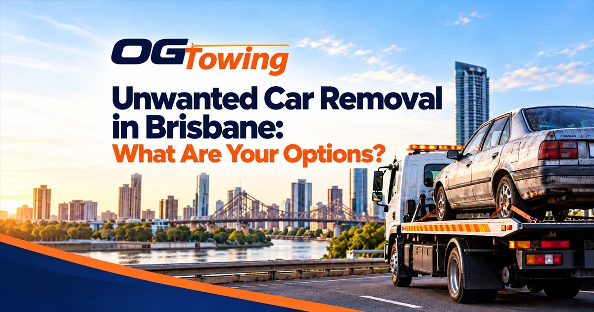

Do you have an old, damaged, scrap or unwanted car taking up valuable space in your driveway? Getting rid of a vehicle in Brisbane doesn't have to be complicated. Whether your car has stopped running, failed an inspection or simply isn't worth repairing, several options are available to help you dispose of it responsibly.
From selling your vehicle privately to choosing a cash-for-cars service, the right option depends on the car's condition, its potential resale value and how quickly you want it removed.
At OG Towing, we help Brisbane motorists explore convenient vehicle removal and towing solutions. In this guide, we'll explain the main options for unwanted car removal in Brisbane and how to choose the one that suits your needs.
1. Sell Your Unwanted Car for Cash
One of the most convenient options is selling your unwanted vehicle to a cash-for-cars service. This can be particularly useful if your car is old, damaged, unregistered, written off or no longer running.
Instead of spending money on repairs or advertising, you can request an offer based on your vehicle's condition and available parts or scrap value.
Benefits of cash-for-cars services
- Convenience: Arrange collection without needing to transport the vehicle yourself.
- Quick transactions: Some providers offer prompt payment and collection.
- Suitable for damaged vehicles: Cars that are difficult to sell privately may still have resale or parts value.
- Less effort: Avoid managing multiple private-sale enquiries and inspections.
OG Towing offers a cash-for-cars service in Brisbane for old, damaged, non-running and unwanted vehicles. Its service page advertises free car removal and towing, subject to confirming the details of your vehicle and collection.
Before accepting an offer, ask how much you will receive, whether towing is included and whether any additional charges apply.
2. Sell Your Car Privately
If your vehicle is still in reasonable condition, selling it privately may help you achieve a higher price than selling it for scrap.
You can advertise through online vehicle marketplaces, local community groups or classified websites. Providing clear photographs, an accurate description and information about the car's service history can help attract potential buyers.
However, a private sale can take time. You may need to arrange inspections, negotiate the price and organise the paperwork.
In Queensland, the requirements for selling a registered vehicle can include a current safety certificate, unless an exemption applies. Check the Queensland Government's guide to selling a used vehicle before completing the sale.
Best for: Vehicles that remain roadworthy or have enough market value to justify a private sale.
3. Trade Your Vehicle In at a Dealership
If you're planning to buy another vehicle, trading in your old car may be a convenient alternative.
A dealership can assess your existing vehicle and apply an agreed trade-in value towards your next purchase. This can reduce the time and effort involved in selling privately.
However, compare the trade-in offer with other available options. A dealership may offer less than you could obtain from a private buyer, depending on the vehicle's age, condition and demand.
Best for: Drivers who want to replace their current vehicle and prefer a straightforward transaction.
4. Sell Your Car to an Auto Wrecker or Parts Dismantler
Vehicles that are too expensive to repair may still contain valuable components. Engines, transmissions, wheels, batteries and other usable parts can sometimes be recovered and resold.
An auto wrecker or licensed dismantler may assess your vehicle based on its parts, metal value and overall condition.
This option can be suitable for accident-damaged cars, older models and vehicles that have reached the end of their useful life.
Before proceeding, ask how the vehicle will be dismantled, whether collection is available and what documentation you will receive.
Best for: Scrap vehicles, damaged cars and models with reusable components.
5. Arrange Professional Car Removal and Towing
What if your car won't start, has been sitting unused for months or is parked somewhere difficult to access?
Professional car removal and towing can help you move the vehicle without attempting to drive it. This is particularly helpful for non-running cars, vehicles with mechanical failures and damaged vehicles that need safe transportation.
OG Towing provides towing services throughout Brisbane and surrounding areas. You can explore its car towing services or contact the team to discuss your vehicle removal requirements.
When comparing providers, ask about:
- Collection availability and estimated arrival time.
- Towing charges and any additional fees.
- Vehicle access requirements.
- Payment arrangements, if you are selling the vehicle.
- Proof of ownership and any paperwork required.
Best for: Vehicles that cannot be driven safely or need to be collected from a home, workplace or roadside location.
How to Choose the Best Unwanted Car Removal Option
The right solution depends on your priorities. Consider the following comparison before making a decision.
| Removal option | Main advantage | Consideration |
|---|---|---|
| Cash for cars | Convenient sale and collection | Compare offers before accepting |
| Private sale | Potentially higher resale value | Can take longer |
| Dealership trade-in | Convenient when buying another car | Trade-in value may be lower |
| Auto wrecker | Suitable for scrap and parts | Value depends on condition and demand |
| Professional towing | Helps move non-running vehicles | Confirm towing fees and destination |
If your car is in good condition, a private sale may be worth considering. If it is old, damaged or no longer operational, a cash-for-cars provider or auto dismantler may be more practical.
What Affects the Value of an Unwanted Car?
Not every unwanted vehicle has the same value. Several factors influence the offer you may receive.
Make, Model and Age
Popular models and vehicles with readily available parts may attract more interest from buyers and dismantlers.
Overall Condition
A running car may be worth more than a similar vehicle with major mechanical problems. However, even a non-running car may have value through its parts or recyclable materials.
Demand for Spare Parts
Some vehicles contain components that are in high demand, which can influence the price offered.
Metal and Recycling Value
If a vehicle has little resale value, its recoverable metal and materials may still contribute to its worth.
Collection Requirements
Vehicle location, accessibility and the equipment required for collection may affect the service arrangement. Ask the provider to confirm the total offer and any applicable fees before agreeing.
How Does the Unwanted Car Removal Process Work?
Selling or removing an unwanted vehicle can be straightforward when you prepare in advance.
Step 1: Contact a removal provider. Explain whether your car is running, damaged, unregistered or ready for scrap.
Step 2: Provide vehicle details. Share the make, model, year, general condition and location. Photographs may help the provider assess the vehicle.
Step 3: Request a clear quote. Confirm the amount offered, collection arrangements and whether towing is included.
Step 4: Prepare the vehicle. Remove personal belongings, toll tags and any other items you want to keep. Take photographs and retain relevant paperwork.
Step 5: Complete the transaction. Confirm payment arrangements and obtain appropriate documentation for the sale or disposal.
Step 6: Check registration obligations. Follow the applicable Queensland requirements to ensure the vehicle is properly transferred or its registration is cancelled where appropriate.
For official guidance, visit the Queensland Government's vehicle registration and transfer information.
Why Consider OG Towing for Unwanted Car Removal in Brisbane?
Choosing a removal provider that explains its process and pricing clearly can help make the experience less stressful.
OG Towing offers cash-for-cars and vehicle towing services in Brisbane, Capalaba, Redlands and surrounding areas.
Depending on your vehicle and collection requirements, the team can help you explore a practical way to remove an unwanted car without having to organise transport yourself.
Before booking, confirm vehicle eligibility, the final offer, towing arrangements and collection timing directly with the provider.
To discuss your vehicle, visit the OG Towing website or call 0430 917 742.
Final Thoughts
Unwanted car removal in Brisbane offers several possibilities, from private sales and dealership trade-ins to cash-for-cars services, auto dismantlers and professional towing.
The best option depends on your vehicle's condition, its potential value and how quickly you need it removed. Comparing offers and checking collection costs can help you make a more informed decision.
If your car is old, damaged or no longer running, OG Towing can help you explore cash-for-cars and towing options across Brisbane and nearby areas.
Ready to remove your unwanted car? Contact OG Towing to discuss your vehicle and request a quote.
FAQs
You can sell it privately, trade it in, sell it to a vehicle dismantler or contact a cash-for-cars provider. If the vehicle cannot be driven, professional towing or collection may be the most practical option.
Yes. Non-running vehicles may still have value through their spare parts or recyclable materials. Contact a cash-for-cars provider or auto dismantler to discuss your vehicle's condition and request an offer.
OG Towing advertises cash-for-cars and unwanted vehicle removal services in Brisbane. Its cash-for-cars page states that towing and removal are offered without charge. Confirm the final offer, eligibility and collection arrangements directly with the team.
Some providers advertise free car removal, but the terms can vary. Ask whether towing is included, whether any additional fees apply and whether the quoted payment is the final amount you will receive.
You should be prepared to provide proof of ownership or other documents requested by the removal provider. Depending on how the vehicle is sold or disposed of, you may also need to complete registration transfer or cancellation steps. Check the relevant Queensland Government vehicle sale requirements for guidance.